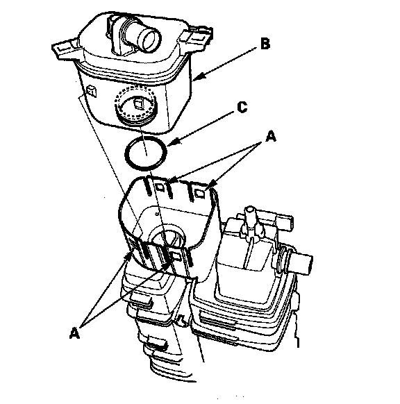

Canister Vent Valve: Service and Repair
EVAP Canister Vent Shut Valve Replacement1. Remove the EVAP canister.

2. Pry the lock tabs outward (A), then remove the EVAP canister vent shut valve (B).
NOTE: Be careful not to damage the lock tabs.
3. Install the parts in the reverse order of removal with a new O-ring (C).
NOTE: Do not coat the O-ring with oil.